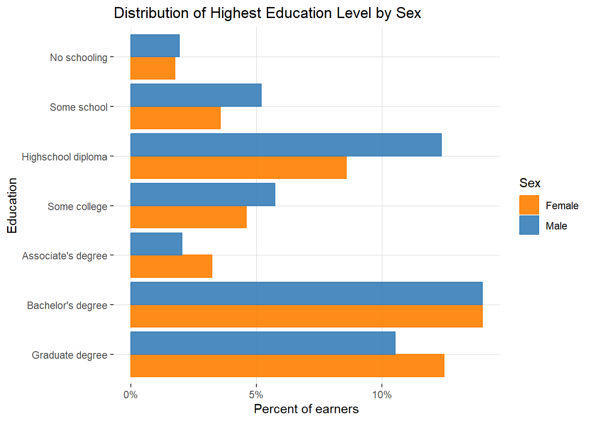

library(dplyr)
library(ggplot2)
library(modelsummary)
library(ggstats)
library(srvyr)How I work with census data
R
Data Management
I often want to reference
Microdata via IPUMS
IPUMS provides census and survey data from around the world integrated across time and space. IPUMS integration and documentation makes it easy to study change, conduct comparative research, merge information across data types, and analyze individuals within family and community contexts. Data and services available free of charge. – [@]
ipums r is cool
library(ipumsr)
# Note -- I store my ipums api key in the .Renviron file
set_ipums_api_key(Sys.getenv("ipums_api_key"))What’s available?
ipums_data_collections() %>%
filter(api_support == TRUE) %>%
arrange(desc(collection_type))| collection_name | collection_type | code_for_api | api_support |
|---|---|---|---|
| IPUMS USA | microdata | usa | TRUE |
| IPUMS CPS | microdata | cps | TRUE |
| IPUMS International | microdata | ipumsi | TRUE |
| IPUMS ATUS | microdata | atus | TRUE |
| IPUMS AHTUS | microdata | ahtus | TRUE |
| IPUMS MTUS | microdata | mtus | TRUE |
| IPUMS NHIS | microdata | nhis | TRUE |
| IPUMS MEPS | microdata | meps | TRUE |
| IPUMS NHGIS | aggregate data | nhgis | TRUE |
For analysis of populations in the U.S., the IPUMS USA and IPUMS CPS collections are of particular interest:
IPUMS USA: IPUMS USA collects, preserves and harmonizes U.S. census microdata and provides easy access to this data with enhanced documentation. Data includes decennial censuses from 1790 to 2010 and American Community Surveys (ACS) from 2000 to the present (Ruggles et al. 2024).
We can check out the newest products they have in the USA collection as follows:
get_sample_info(collection="usa") %>% arrange(desc(name)) %>% head(5)| name | description |
|---|---|
| us2022d | 2018-2022, PRCS 5-year |
| us2022c | 2018-2022, ACS 5-year |
| us2022b | 2022 PRCS |
| us2022a | 2022 ACS |
| us2021d | 2017-2021, PRCS 5-year |
get_sample_info(collection="usa") %>%
filter(stringr::str_detect(description, "ACS")) %>%
arrange(desc(name)) %>%
head(5)| name | description |
|---|---|
| us2022c | 2018-2022, ACS 5-year |
| us2022a | 2022 ACS |
| us2021c | 2017-2021, ACS 5-year |
| us2021a | 2021 ACS |
| us2020c | 2016-2020, ACS 5-year |
An IPUMS USA example
I’ll define a function, retrieve_alameda_sample() that accomplishes that and only run the IPUMS request if I don’t already have the data locally.
retrieve_ca_sample <- function(sample){
extract <- define_extract_micro(
description = "CA Incomes by PUMA",
collection = "usa",
samples = c(sample),
variables = list(
"PUMA",
"FAMUNIT",
"RELATE",
"AGE",
"SEX",
"EDUC",
"POVERTY",
"HHINCOME",
"INCTOT",
var_spec("STATEFIP", case_selections = "06")
)
)
data_path <- extract %>%
submit_extract() %>%
wait_for_extract() %>%
download_extract(download_dir = here::here("data"),
overwrite = TRUE)
data <- read_ipums_micro(data_path)
return(data)
}local_ipums_extracts <- list.files(
path = here::here('data'),
pattern = "\\.xml$",
full.names = TRUE)
if (length(local_ipums_extracts) > 0) {
existing_path <- local_ipums_extracts[1]
data <- read_ipums_micro(existing_path)
} else {
data <- retrieve_ca_sample("us2022a")
}Use of data from IPUMS USA is subject to conditions including that users should cite the data appropriately. Use command `ipums_conditions()` for more details.Small geographies in the ACS
Use the 2020 PUMA Names.
The smallest geographic area explicitly identified in the microdata is public use microdata area (PUMA), a geographic area defined based on population. Each PUMA includes about 100,000 residents. IPUMS geographers are sometimes able to infer other small geographic areas, such as city, metro area, and county, from PUMA, depending on how the boundaries of PUMAs and these other geographic areas correspond. As a result, some cities, metro areas, and counties are not able to be identified in the microdata.
https://forum.ipums.org/t/how-can-i-pull-data-at-the-zip-code-or-city-level/5650/2
oakland_pumas <- c(111, 112, 113, 123)
oak <- data %>%
filter(PUMA %in% oakland_pumas)
oak %>% head()| YEAR | SAMPLE | SERIAL | CBSERIAL | HHWT | CLUSTER | STATEFIP | PUMA | STRATA | GQ | HHINCOME | PERNUM | PERWT | FAMUNIT | RELATE | RELATED | SEX | AGE | EDUC | EDUCD | INCTOT | POVERTY |
|---|---|---|---|---|---|---|---|---|---|---|---|---|---|---|---|---|---|---|---|---|---|
| 2022 | 202201 | 74718 | 2.02201e+12 | 5 | 2.022001e+12 | 6 | 111 | 11106 | 3 | 9999999 | 1 | 5 | 1 | 13 | 1301 | 1 | 20 | 7 | 71 | 0 | 0 |
| 2022 | 202201 | 74737 | 2.02201e+12 | 56 | 2.022001e+12 | 6 | 111 | 11106 | 3 | 9999999 | 1 | 56 | 1 | 13 | 1301 | 1 | 56 | 6 | 63 | 480 | 0 |
| 2022 | 202201 | 74738 | 2.02201e+12 | 15 | 2.022001e+12 | 6 | 113 | 11306 | 4 | 9999999 | 1 | 15 | 1 | 12 | 1270 | 1 | 34 | 6 | 63 | 1200 | 0 |
| 2022 | 202201 | 75005 | 2.02201e+12 | 38 | 2.022001e+12 | 6 | 113 | 11306 | 4 | 9999999 | 1 | 38 | 1 | 12 | 1270 | 2 | 40 | 2 | 23 | 41300 | 0 |
| 2022 | 202201 | 75119 | 2.02201e+12 | 20 | 2.022001e+12 | 6 | 111 | 11106 | 3 | 9999999 | 1 | 20 | 1 | 13 | 1301 | 2 | 88 | 2 | 23 | 5800 | 0 |
| 2022 | 202201 | 75131 | 2.02201e+12 | 11 | 2.022001e+12 | 6 | 123 | 12306 | 3 | 9999999 | 1 | 11 | 1 | 13 | 1301 | 2 | 86 | 2 | 23 | 0 | 0 |
Granularity and weights in the ACS
SERIAL is an identifying number unique to each household record in a given sample. All person records are assigned the same serial number as the household record that they follow. (Person records also have their own unique identifiers - see PERNUM.)
A combination of SAMPLE and SERIAL provides a unique identifier for every household in the IPUMS;
the combination of SAMPLE, SERIAL, and PERNUM uniquely identifies every person in the database. https://usa.ipums.org/usa-action/variables/SERIAL
oak %>% group_by(PUMA) %>% summarise(
n_rows = n(),
n_individuals = n_distinct(SAMPLE, SERIAL, PERNUM),
n_households = n_distinct(SAMPLE, SERIAL)
)| PUMA | n_rows | n_individuals | n_households |
|---|---|---|---|
| 111 | 1083 | 1083 | 578 |
| 112 | 1152 | 1152 | 547 |
| 113 | 989 | 989 | 385 |
| 123 | 905 | 905 | 389 |
Thus, oak is at the individual level. Here I’ll make a oak_households dataframe that is at the household level:
oak_households <- oak %>%
distinct(SAMPLE, SERIAL, .keep_all = TRUE)PERWT indicates how many persons in the U.S. population are represented by a given person in an IPUMS sample. https://usa.ipums.org/usa-action/variables/perwt
To apply sample weights to an IPUMS file, users should follow one of the following procedures:
- For household-level analyses using the […] ACS/PRCS samples, weight the households using the HHWT variable. HHWT gives the number of households in the general population represented by each household in the sample.
- For person-level analyses using the […] ACS/PRCS samples, apply the PERWT variable. PERWT gives the population represented by each individual in the sample.
https://usa.ipums.org/usa/intro.shtml#weights
HHINCOME reports the total money income of all household members age 15+ during the previous year. The amount should equal the sum of all household members’ individual incomes, as recorded in the person-record variable INCTOT. https://usa.ipums.org/usa-action/variables/HHINCOME
household_serials <- oak %>%
group_by(SERIAL) %>%
count() %>%
filter(n > 1) %>%
pull(SERIAL)
set.seed(2)
oak %>% filter(SERIAL == sample(household_serials, 1)) %>%
select(c(PERNUM, SEX, AGE, HHINCOME, INCTOT, PERWT, HHWT))| PERNUM | SEX | AGE | HHINCOME | INCTOT | PERWT | HHWT |
|---|---|---|---|---|---|---|
| 1 | 2 | 31 | 27300 | 9300 | 62 | 62 |
| 2 | 1 | 13 | 27300 | 9999999 | 60 | 62 |
| 3 | 2 | 3 | 27300 | 9999999 | 120 | 62 |
| 4 | 1 | 27 | 27300 | 18000 | 63 | 62 |
households_w_income <- oak_households %>%
filter(HHINCOME != 9999999, HHINCOME > 0)
households_w_income%>%
select(HHINCOME) %>% summary() HHINCOME
Min. : 300
1st Qu.: 45000
Median : 103000
Mean : 158069
3rd Qu.: 203100
Max. :1433800 print(weighted.median(households_w_income$HHINCOME, households_w_income$HHWT))[1] 90000oak %>% select(PERWT) %>% sum()[1] 430052Comparing results to census aggregates
library(tidycensus)
# Note -- I store my census api key in the .Renviron file
census_api_key(Sys.getenv("census_api_key"))I can use tidycensus to easily access aggregate measures from the census. https://walker-data.com/tidycensus/
# Retrieve poverty data for Oakland (place level)
oakland_stats <- get_acs(
geography = "place",
variables = c(
median_hh_income = "B19013_001", # Median household income
total_pop = "B17001_001" # Total population for poverty status determination
),
state = "CA",
year = 2022, # Adjust the year for ACS 5-year estimates
survey = "acs1" # Use 5-year ACS estimates
)
oakland_stats <- oakland_stats %>% filter(GEOID == '0653000')
oakland_stats| GEOID | NAME | variable | estimate | moe |
|---|---|---|---|---|
| 0653000 | Oakland city, California | total_pop | 426323 | 811 |
| 0653000 | Oakland city, California | median_hh_income | 93146 | 6232 |
I don’t like the IPUMS option for getting single year data points, for that I like tidycensus
The public use samples of the ACS and PRCS are extracted from the Census Bureau’s larger internal data files and are thus subject to additional sampling error and further data processing (such as imputation and allocation). […] individual variables, such as income and housing values, are Top coded. […] Weights included with the ACS PUMS for the household and person-level data adjust for the mixed geographic sampling rates, nonresponse adjustments, and individual sampling probabilities. Estimates from the ACS IPUMS samples may not be consistent with summary table ACS estimates due to the additional sampling error.
https://usa.ipums.org/usa/chapter2/chapter2.shtml#ACS
Using microdata
Why is it coooler to get microdata?
individuals_w_income <- oak %>%
# Find adult earners
filter(INCTOT != 9999999, INCTOT > 0, AGE >= 18) %>%
# Label sex
mutate(SEX = case_when(SEX == 1 ~ 'Male', TRUE ~ 'Female')) %>%
# Label education
mutate(
educ_attain = case_when(
EDUC == 10 ~ "Bachelor's degree",
EDUC == 11 ~ "Graduate degree",
EDUCD %in% c(63, 65, 64) ~ "Highschool diploma",
EDUCD == 71 ~ "Some college",
EDUC == 8 ~ "Associate's degree",
EDUC == 0 ~ "No schooling",
EDUCD == 61 ~ "Some school",
EDUC < 6 ~ "Some school",
) %>% as.factor()
)individuals_w_income %>%
group_by(SEX) %>%
summarise(mean_income = mean(INCTOT))| SEX | mean_income |
|---|---|
| Female | 76766.01 |
| Male | 99333.91 |
99333.91 / 76766.01[1] 1.293983Code
colors <- RColorBrewer::brewer.pal(n=5, "Set1")[c(5, 2)]
max_income <- 400000
steps <- 50000
ggplot(individuals_w_income, aes(x = INCTOT, color = factor(SEX), fill = factor(SEX), weight = PERWT)) +
geom_histogram(binwidth = steps, position = "dodge", boundary = 0, alpha = 0.8, aes(y = ..density..)) +
scale_color_manual(values = colors) +
scale_fill_manual(values = colors) +
scale_x_continuous(labels = scales::label_dollar(),
limits = c(0, 400000),
breaks = seq(0, 400000, steps)) +
scale_y_continuous(labels = scales::label_percent(), ) +
labs(title = "Income Distribution by Sex",
x = "Income",
y = "Density",
color = "Sex",
fill = "Sex") +
theme(panel.grid.minor = element_blank(),
panel.grid = element_line(color="lightgrey",
size=.2,
linetype = 1),
panel.background = element_rect("white")
)
Code
gof_stuff <- tribble(
~raw, ~clean, ~fmt,
"nobs", "N", 0,
"r.squared", "R²", 3
)model_ols1 <- lm(log(INCTOT) ~ factor(SEX),
data = individuals_w_income, weights = individuals_w_income$PERWT)
model_ols2 <- lm(log(INCTOT) ~ factor(SEX) + AGE + I(AGE^2),
data = individuals_w_income, weights = individuals_w_income$PERWT)
model_ols3 <- lm(log(INCTOT) ~ factor(SEX) + AGE + I(AGE^2) + relevel(educ_attain, ref="Highschool diploma"),
data = individuals_w_income, weights = individuals_w_income$PERWT)
modelsummary(list(model_ols1, model_ols2, model_ols3),
gof_map = gof_stuff, exponentiate = TRUE)| (1) | (2) | (3) | |
|---|---|---|---|
| (Intercept) | 37064.571 | 6006.148 | 3805.220 |
| (1229.397) | (1044.872) | (584.301) | |
| factor(SEX)Male | 1.251 | 1.214 | 1.378 |
| (0.058) | (0.055) | (0.054) | |
| AGE | 1.089 | 1.074 | |
| (0.008) | (0.007) | ||
| I(AGE^2) | 0.999 | 0.999 | |
| (0.000) | (0.000) | ||
| relevel(educ_attain, ref = "Highschool diploma")Associate's degree | 1.466 | ||
| (0.139) | |||
| relevel(educ_attain, ref = "Highschool diploma")Bachelor's degree | 2.880 | ||
| (0.161) | |||
| relevel(educ_attain, ref = "Highschool diploma")Graduate degree | 4.377 | ||
| (0.256) | |||
| relevel(educ_attain, ref = "Highschool diploma")No schooling | 0.743 | ||
| (0.081) | |||
| relevel(educ_attain, ref = "Highschool diploma")Some college | 1.171 | ||
| (0.086) | |||
| relevel(educ_attain, ref = "Highschool diploma")Some school | 0.774 | ||
| (0.060) | |||
| N | 3131 | 3131 | 3131 |
| R² | 0.007 | 0.058 | 0.308 |
Code
order <- individuals_w_income %>% distinct(EDUC, educ_attain) %>% arrange(desc(EDUC)) %>% distinct(educ_attain) %>% pull()
ggplot(individuals_w_income, aes(y = factor(educ_attain, level=order), color = factor(SEX), fill = factor(SEX), weight = PERWT)) +
geom_bar(position = "dodge", boundary = 0, alpha = 0.9, aes(x = (..count..)/sum(..count..))) +
scale_color_manual(values = colors) +
scale_fill_manual(values = colors) +
scale_x_continuous(labels = scales::label_percent(), ) +
labs(title = "Distribution of Highest Education Level by Sex",
x = "Percent of earners",
y = "Education",
color = "Sex",
fill = "Sex") +
theme(panel.grid.minor = element_blank(),
panel.grid = element_line(color="lightgrey",
size=.2,
linetype = 1),
panel.background = element_rect("white")
)
model_ols4 <- lm(log(INCTOT) ~ AGE + I(AGE^2) + factor(SEX)*relevel(educ_attain, ref="Highschool diploma"),
data = individuals_w_income, weights = individuals_w_income$PERWT)
modelsummary(list(model_ols4),
gof_map = gof_stuff, exponentiate = TRUE)| (1) | |
|---|---|
| (Intercept) | 4098.909 |
| (659.107) | |
| AGE | 1.074 |
| (0.007) | |
| I(AGE^2) | 0.999 |
| (0.000) | |
| factor(SEX)Male | 1.239 |
| (0.106) | |
| relevel(educ_attain, ref = "Highschool diploma")Associate's degree | 1.357 |
| (0.171) | |
| relevel(educ_attain, ref = "Highschool diploma")Bachelor's degree | 2.656 |
| (0.222) | |
| relevel(educ_attain, ref = "Highschool diploma")Graduate degree | 3.987 |
| (0.342) | |
| relevel(educ_attain, ref = "Highschool diploma")No schooling | 0.778 |
| (0.125) | |
| relevel(educ_attain, ref = "Highschool diploma")Some college | 1.025 |
| (0.114) | |
| relevel(educ_attain, ref = "Highschool diploma")Some school | 0.787 |
| (0.096) | |
| factor(SEX)Male × relevel(educ_attain, ref = "Highschool diploma")Associate's degree | 1.158 |
| (0.223) | |
| factor(SEX)Male × relevel(educ_attain, ref = "Highschool diploma")Bachelor's degree | 1.152 |
| (0.130) | |
| factor(SEX)Male × relevel(educ_attain, ref = "Highschool diploma")Graduate degree | 1.189 |
| (0.140) | |
| factor(SEX)Male × relevel(educ_attain, ref = "Highschool diploma")No schooling | 0.906 |
| (0.198) | |
| factor(SEX)Male × relevel(educ_attain, ref = "Highschool diploma")Some college | 1.263 |
| (0.187) | |
| factor(SEX)Male × relevel(educ_attain, ref = "Highschool diploma")Some school | 0.974 |
| (0.154) | |
| N | 3131 |
| R² | 0.309 |
References
Ruggles, Steven, Sarah Flood, Matthew Sobek, Daniel Backman, Annie Chen, Grace Cooper, Stephanie Richards, Renae Rogers, and Megan Schouweiler. 2024. “IPUMS USA: Version 15.0.” Minneapolis, MN: IPUMS. https://doi.org/10.18128/D010.V15.0.
Walker, Kyle. 2023. Analyzing US Census Data. 1st edition. Boca Raton: Chapman; Hall/CRC.